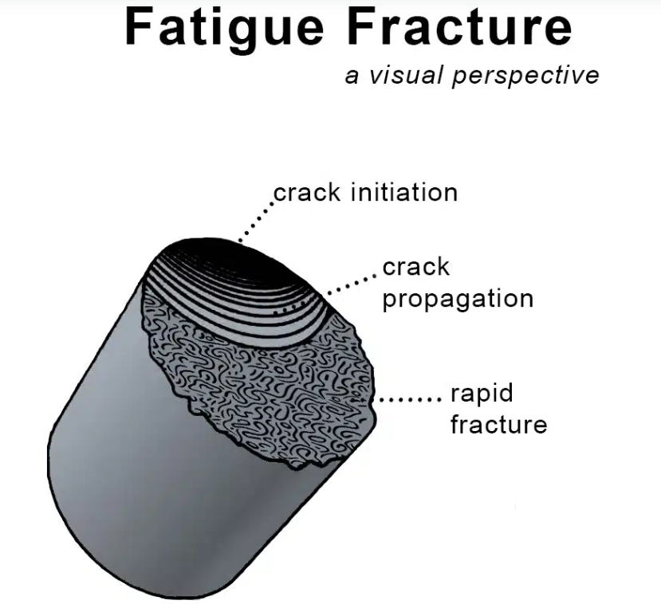
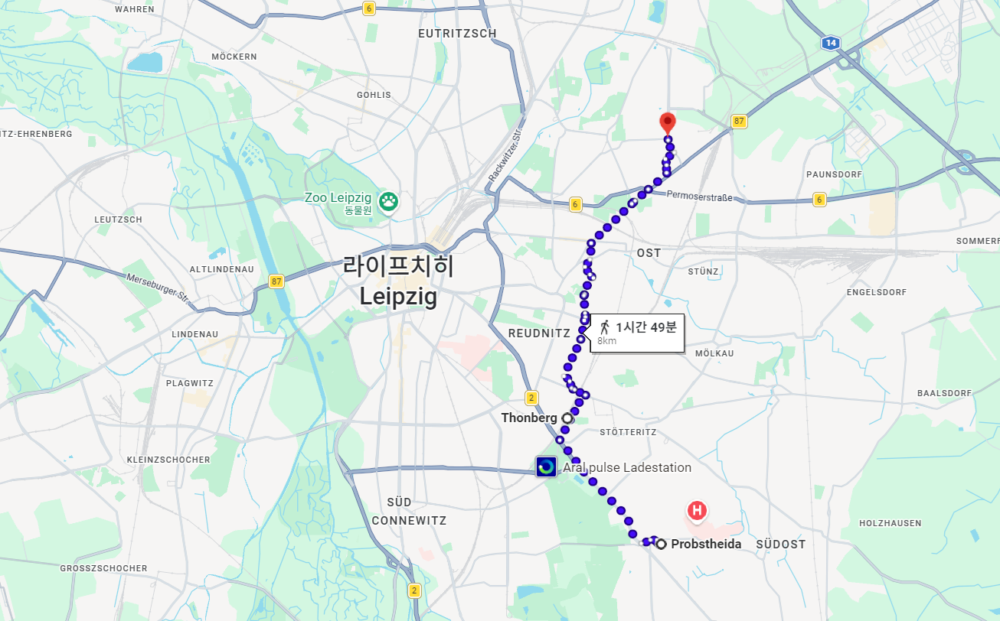
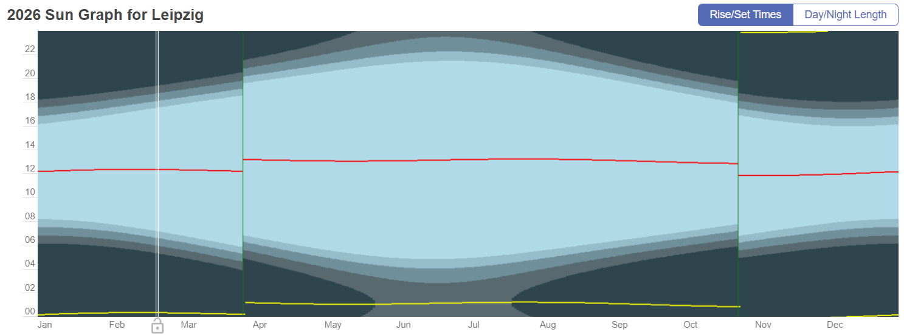
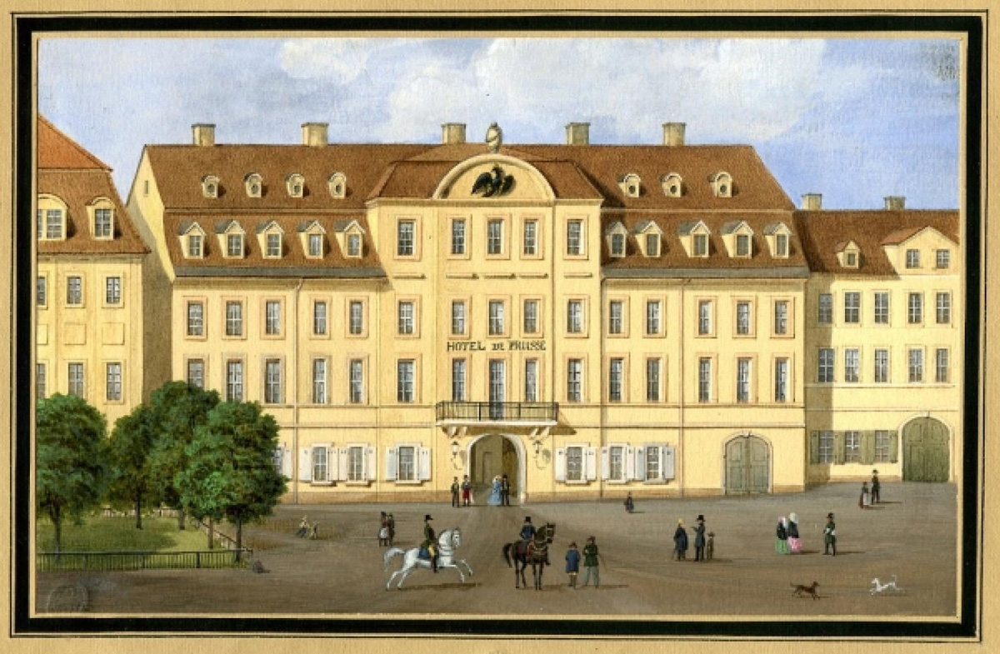
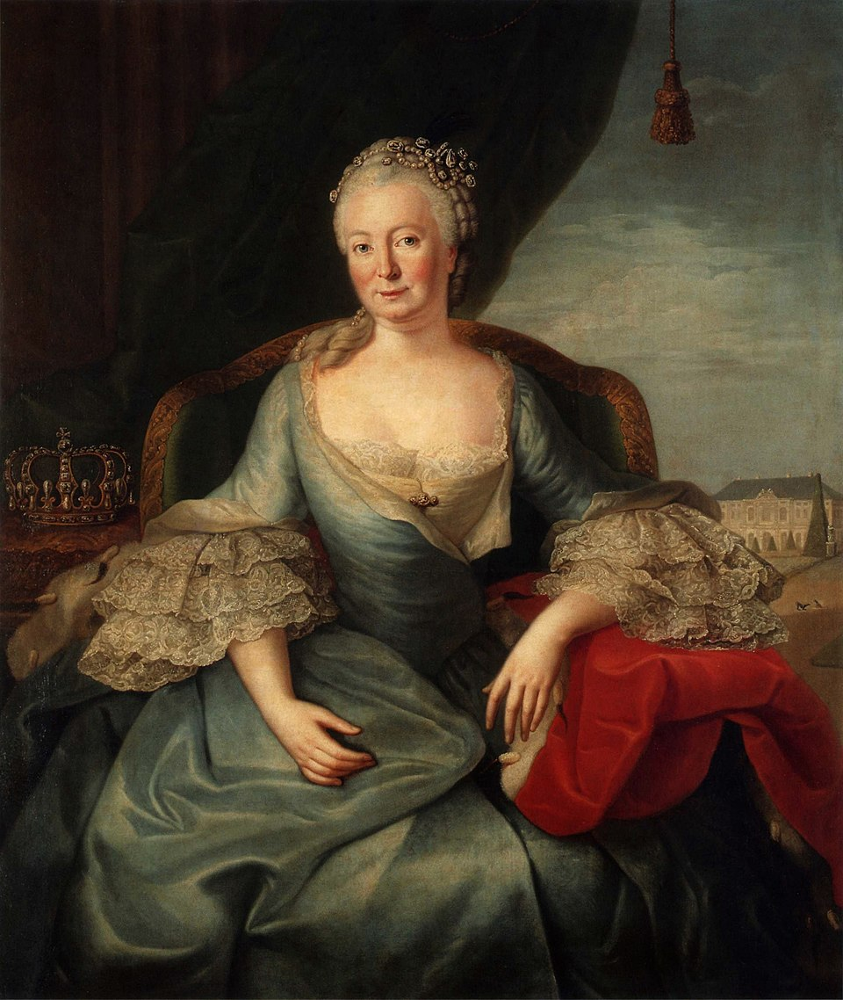
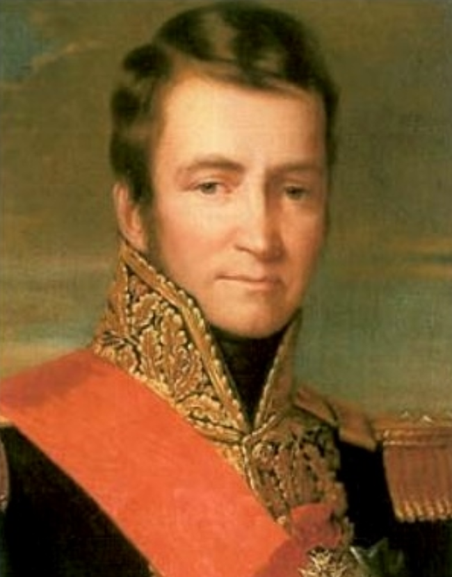

라이프치히 전투 (36) - 악마는 디테일에
게시: 2026-02-23T06:30:12+09:00
흔히 작은 실수 하나로 인해 큰 재앙이 찾아올 수도 있다고들 말합니다. 그러나 엄밀히 이야기하면 그건 사실이 아닙니다. 큰 재앙은 작은 실수 하나가 아니라 수많은 실수가 겹쳐진 결과이고, 그렇게 많은 실수가 겹쳐질 때까지 상황이 방치된다는 것은 그 시스템 자체에 문제가 있다는 뜻입니다. 1813년 라이프치히에서 나폴레옹의 제국이 무너진 것은 상병(corporal) 하나의 실수가 아니라, 러시아 원정 때부터, 아니 어쩌면 1807년 아일라우 전투 때부터 쌓여온 피로로 인해 빚어진, 나폴레옹 제국의 피로 골절 같은 것이라고 볼 수 있습니다. 이제 보시게 될 과정은 바로 그 이야기입니다.

(피로 골절은 운동선수에게 곧잘 일어나는 골절입니다. 뼈가 부러지려면 10이라는 충격이 가해져야 할 때, 1이라는 충격이 가해지면 뼈는 부러지지 않습니다. 하지만 1이라는 작은 충격이 오랜 기간에 걸쳐 수백~수천 번 가해지면, 겉으로는 보이지 않는 스트레스가 계속 누적되어 어느 순간에는 10보다 훨씬 작은 충격에도 갑자기 골절이 되기도 합니다. 그게 피로 골절입니다. 사람의 뼈뿐만 아니라, 금속 구조물에도 동일한 현상이 발생합니다. 그게 피로 파괴(fatigue fracture)입니다.) 10월 18일 오후 5시 경, 나폴레옹은 주전선인 프롭스트하이다(Probstheida) 약 3km 북쪽인 톤베르크(Thonberg, 톤 언덕)에 있던 자신의 사령부에 지친 몸을 이끌고 돌아왔습니다. 그는 참모들에게 모닥불을 피우라고 주문하고는, 그 모닥불 근처에 간이의자(stool)을 놓고 앉아서 뭔가 골똘히 생각하다가 그만 졸음에 빠져들고 말았습니다. 아마 참모들은 난처했을 것입니다. 나폴레옹이 밤새 한숨도 자지 못한 것을 알고 있었지만, 전투가 한창 진행 중인데 그가 언제까지 자도록 내버려둘 수도 없었습니다. 다행인지 불행인지 약 15분 뒤에 적의 포탄 하나가 바로 그 모닥불을 때렸고, 그 소란에 나폴레옹도 잠에서 깼습니다. 원래 낮잠은 15분 정도 자는 것이 피로 회복에 제일 좋다고 합니다. 정말 효과가 있었는지, 잠에서 깬 나폴레옹은 참모들을 불러모아 활발하게 명령서를 발부했습니다. 물론 후퇴에 대한 것이었습니다. 후퇴 순서는 먼저 예비 포병대와 탄약차가 후퇴하고, 그 뒤를 이어 고참근위대, 그 뒤에 신참근위대, 또 그 뒤를 이어 제4기병군단, 제2기병군단, 빅토르의 제2군단, 그리고 오쥬로의 제9군단이 새벽이 오기 전에 철수를 완료하는 것이었습니다. 나머지 군단들, 즉 제3,5,6,7,8,11 군단들에 대해서는 그때까지도 아직 후퇴 명령을 내리지 않았습니다. 이렇게 보면 확실히 아끼는 부대들 먼저 후퇴시키는 의도가 눈에 보입니다. 애지중지하던 근위대는 물론이고, 쉽게 보충하기 어려운 자원인 포병과 기병 위주로 먼저 철수시킨 것입니다. 빅토르와 오쥬로의 군단들은 딱히 아끼는 부대여서 먼저 후퇴시킨 것은 아니었고, 탈출로인 린더나우 방향에 가까운 부대였기 때문에 포함되었습니다.

(18일 전투 내내 나폴레옹의 사령부는 프롭스트하이다 북쪽 3km 지점인 톤베르크(Thonberg)에 있었습니다. 그 이름처럼 여기가 야트막한 언덕이기 때문이었습니다. 그러나 현재의 사진을 보면 이걸 언덕이라고 할 수 있나 싶을 정도로 그냥 평지에 가깝습니다. 톤베르크는 당시 치열한 전투가 벌어졌던 북동쪽 쇤너펠트에서 불과 5km 떨어진 곳에 있습니다.) 거기까지 명령을 내린 나폴레옹은 6시 30분 해가 지고 나자, 문서 작업을 위해 등불을 켜려고 톤베르크 현장에 자신의 야전막사를 설치하도록 지시했습니다. 그러나 돌아온 대답은 자신의 야전막사가 예비 포병대와 함께 이미 철수했다는 것이었습니다. 나폴레옹은 별수없이 라이프치히 시내에서 밤을 보내기로 하고 뮈라와 함께 시내로 향했습니다. 그러나 이번 후퇴는 라이프치히 시내의 좁은 거리를 통과하는 것이다보니 생각보다 교통 정체가 심했습니다. 나폴레옹도 별수없이 그냥 빙 우회하여 그날 밤 숙소로 정해진 건물에 도착해야 했는데, 밤 9시에 겨우 도착해서 보니 그 건물은 호텔로서 이름이 프로이센 호텔(Hôtel de Prusse)이었고, 정면에 프로이센의 상징인 커다란 검은 독수리 문장까지 새겨져 있었습니다. 굳이 나폴레옹을 이렇게 프로이센 기운이 뿜뿜 나오는 건물로 데려온 것은 참모들의 세심한 배려가 부족했기 때문이었겠지만, 실은 1812년 말 러시아에서 돌아올 때도 나폴레옹이 이 호텔에서 묵은 적이 있었으므로 갑자기 황제의 숙소를 정해야 하는 상황에서는 이미 검증된 호텔을 택하는 것이 당연했을 것입니다.

(라이프치히는 위도상으로 서울보다 훨씬 북쪽에 위치한 도시입니다. 10월 18일이면 저녁 6시 10분 경에 해가 져버럽니다. 저녁놀을 생각하더라도, 저녁 6시 30분이면 이미 깜깜해져서 불을 켜지 않는 이상 문서 작업이 어려웠을 것입니다.)

(라이프치히에 있던 독일 호텔이니까 이름이 프랑스어 Hôtel de Prusse(오뗄 드 프뤼스)가 아니라 Preußischer Hof(프로이셔 호프)여야 하는 것 아닐까 싶습니다만, 실제로 1805년 개장한 저 호텔의 원래 이름은 저 1830년대 그림에도 나와 있듯이 Hôtel de Prusse였습니다. 당시 독일에서는 마치 현재의 우리나라가 호텔 간판을 영어 이름으로 내거는 것처럼 프랑스어 이름을 선호했습니다. 그러다가 이름을 Preußischer Hof로 바꾼 것은 1915년 제1차 세계대전 발발 이후였습니다. 한창 혈투를 벌이는 적국 프랑스식 이름을 더 받아들이기 어려웠던 것이지요.)

(사실 작센 도시인 라이프치히의 호텔에 '프로이센 호텔'이라는 이름이 붙은 것도 이상하긴 합니다. 전통적으로 작센은 프로이센과 사이가 그다지 좋은 편은 아니었기 때문입니다. 이 호텔에 그런 이름이 붙은 이유는, 원래 저 건물은 Goldener Helm(황금 투구)라는 이름으로 불리다가 18세기 후반에 그림 속 인물인 프로이센 왕비 엘리자베트(Elisabeth Christine von Braunschweig-Wolfenbüttel-Bevern, Königin von Preußen)가 이 건물에 묵었다는 것을 기념한 것입니다.) 아무튼 이 재수없는 호텔에 도착한 나폴레옹은 베르티에 및 마레와 함께 나머지 군단들의 철수 계획을 다듬기 시작했습니다. 원래 6시 30분에 했어야 하는 일이었으나 해가 지고 야전막사를 칠 수 없고 길이 막히는 등의 우여곡절 끝에 9시 이후로 작업이 늦어진 것이라, 나폴레옹에겐 1분 1초가 급한 상황이었습니다. 나폴레옹은 그 명석한 머리 속에서 떠오르는 대로 빠른 말투로 명령서를 구술했고, 베르티에와 그 휘하 참모들, 그리고 그들에게 딸린 수많은 서기들과 연락병들이 정신없이 명령서를 받아적고 수정하고 복사본을 만들고 인장을 찍고 봉인한 뒤, 후퇴하는 병사들로 북새통인 라이프치히 거리를 뚫고 말을 달려 어둠 속 전선 어느 구석에 있을지 모르는 군단장들에게 명령서를 전달했습니다. 여기서 구체적인 명령서 내용을 살펴보는 것은 큰 의미가 없을 것아고 간단히 기본적인 내용만 보면, 우익 전선은 포니아토프스키가, 중앙 전선은 막도날이, 그리고 좌익 전선은 마르몽이 최종 책임을 지고 후퇴한다는 것이었습니다. 각 전선에서의 구체적인 군단별 후퇴 시간과 순서 등은 상황에 따라 각 책임 지휘관이 재량껏 정하도록 하되, 마지막 순간까지 라이프치히 시내를 지키는 책임은 막도날에게 맡겨졌습니다. 막도날은 약 3만의 병력으로 후위를 맡아 최소 24시간 이상 라이프치히를 지켜 전체 그랑다르메의 퇴각을 엄호해야 했습니다. 그 다음이 중요했는데, 막도날의 후위까지 라이프치히 시내에서 철수하고나면 엘스터강에 놓인 호헨브뤼컨(Hohenbrücken, '높은 다리'라는 뜻) 교량을 폭파하도록 했습니다. 이 다리를 폭파하면 라이프치히 시내에서 린더나우로 향하는 길이 뚝 끊기기 때문이었습니다. 그에 그치지 않고 막도날의 후위 부대가 린더나우에 도착하면 랏-포르스트하우스-브뤼커(Rat-Forsthaus-Brücke, '숲 관리회 다리'라는 뜻) 교량을 폭파하여 라이프치히에서 린더나우로 오는 길도 끊도록 했습니다. 이런 폭파 작업은 공병대가 하는 일입니다. 그런데 그랑다르메 전체의 수석 공병대장인 로냐(Joseph Rogniat)는 이미 베르트랑과 함께 퇴각로의 교량들을 확인하기 위해 바이센펠스로 떠난 뒤였습니다. 따라서 그 임무에 대한 책임은 로냐의 수석 참모인 몽포르(Joseph Monfort) 대령에게 떨어지게 되었습니다.

(수석 공병대장 조제프 로냐입니다. 정말 얌전한 모범생처럼 생겼는데, 다행인지 불행인지 1812년 경에는 스페인에서 복무하고 있어서 러시아 원정에는 빠질 수 있었고, 덕분에 베레지나강에 다리를 놓는 위업의 영광은 에블레 장군에게 양보했습니다. 그는 부르봉 왕정 및 루이 필립 왕정 하에서도 잘 살았습니다.)

(조제프 몽포르입니다. 그는 나폴레옹보다 5세 연하로서 원래 대대로 군인으로 복무한 귀족 집안 출신입니다. 실은 그의 이름은 Joseph de Puniet de Monfort 로서, 귀족답게 이름에 particle, 즉 de가 붙었습니다만, 혁명이 발발하자 눈치 좋게 de를 빼버리고 그냥 Joseph Monfort로 이름을 바꿨습니다. 물론 나폴레옹 패망 이후에는 다시 이름에 de를 붙였습니다. 그는 귀족치고는 특이하게도 공병 학교를 졸업하여 기술장교가 되었고, 덕분에 승진도 매우 느려 1813년에도 고작 대령이었습니다. 그는 라이프치히에서의 이 사건으로 나중에 문제의 그 상병과 함께 군사재판에 회부되었으나, 도중에 기소가 기각되었습니다. 그는 80세까지 장수하여 1855년에 사망했습니다.) 원래 후위라는 임무 자체가 매우 위험한 것입니다. 특히나 강을 건너 퇴각해야 하는 상황에서 후위가 퇴각하자마자, 그리고 그 뒤를 바싹 뒤쫓는 적군이 다리를 점거하기 전에 다리를 폭파한다는 것은 시간 조절과 상황 판단을 매우 정확하게 해야 하는 정말 중요한 임무였습닌다. 그래서 나폴레옹은 후위 부대의 최고 책임자인 막도날에게 다리 폭파 명령권을 부여했고, 오로지 막도날의 명령에 따라 다리를 폭파하도록 했습니다. 물론 막도날 본인이 다리에 장착된 폭약의 도화선에 불을 붙이라는 뜻은 아니었습니다. 막도날 같은 원수 레벨의 지휘관에게는 정말로 할 일이 많았고, 막도날은 적절한 사람에게 그 폭파 명령을 위임해야 했습니다. 문제는 18일 밤, 나폴레옹의 속사포 같은 명령서 구술과 그 문서화 과정 등에서, 아무도 정확하게 그런 세부적인 사항을 일개 참모였던 몽포르 대령에게 정확하게 알려주지 않았다는 것이었습니다. 몽포르 대령은 어느 부대가 최후의 후위 부대인지도 알지 못했고, 구체적으로 누가 자신에게 폭파 명령을 내리도록 되어 있는지도 알지 못했습니다. 그러나 나폴레옹은 물론, 베르티에도, 서기들과 참모들도, 막도날도, 모두 누군가 알아서 그런 세부 사항을 챙겼을 거라고 생각했습니다.
('악마는 디테일에 있다'라는 표현은 사소한 실수가 전체를 망칠 수 있으니 주의하라는 격언입니다. 원래 어원은 독일의 건축가 미스 반 데어 로어(Ludwig Mies van der Rohe)가 '신은 디테일 안에 있다'(God is in the detail)라는 말을 자주 쓰면서 세부 사항을 완벽히 챙겨야 완성도가 높아진다는 것을 강조한 것에서 나왔습니다. 이 말이 20세기 들어 신 대신 악마가 들어가게 되었다고 합니다. 이 사진에서는 작가인 파울로 코엘류가 이 말을 한 것으로 나오는데, 코엘류가 이 표현의 창시자는 아닙니다.) Source : The Life of Napoleon Bonaparte, by William Milligan Sloane Napoleon and the Struggle for Germany, by Leggiere, Michael V With Napoleon's Guns by Colonel Jean-Nicolas-Auguste Noël https://www.britannica.com/event/Napoleonic-Wars/Dispositions-for-the-autumn-campaign http://www.historyofwar.org/articles/campaign_leipzig.html https://warhistory.org/@msw/article/leipzig-battle-of-the-nations https://www.encyclopedia.com/history/encyclopedias-almanacs-transcripts-and-maps/leipzig-battle-0 https://warfarehistorynetwork.com/article/death-knell-for-napoleons-empire/ https://www.napoleon-series.org/military-info/battles/leipzig/c_leipzigoob10.html https://de.wikipedia.org/wiki/H%C3%B4tel_de_Prusse https://de.wikipedia.org/wiki/Elisabeth_Christine_von_Braunschweig-Wolfenb%C3%BCttel-Bevern https://fr.wikipedia.org/wiki/Joseph_Rogniat https://fr.wikipedia.org/wiki/Joseph_de_Puniet_de_Monfort